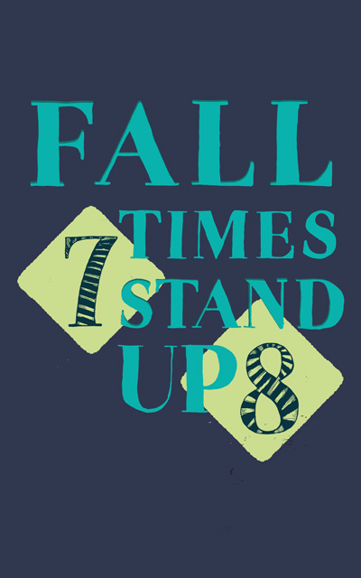
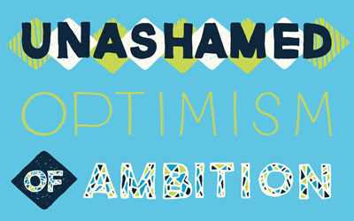
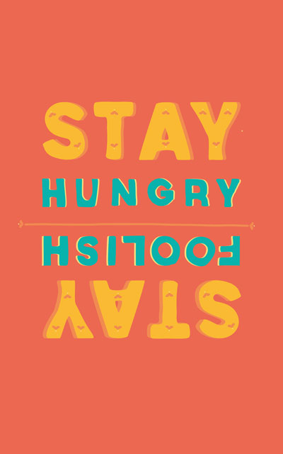
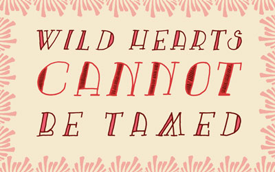
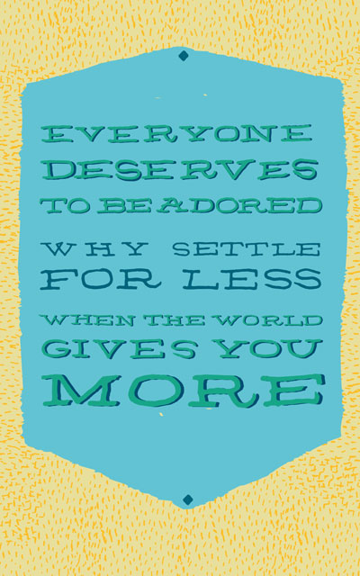

« Previous Demo:
Fullscreen Pageflip Layout
Dribbble Shots by Erika Mackley
Back to the Codrops Article
Sticky Captions Concept
Keep captions in the viewport
Hover over a thumbnail to see the sticky caption

Fall 7 Times Stand Up 8
by Erika Mackley

Unashamed Optimism of Ambition
by Erika Mackley

Stay Hungry. Stay Foolish.
by Erika Mackley

Wild Hearts Cannot Be Tamed
by Erika Mackley
2012 Detroit Tigers
by Erika Mackley
Bad Hair Day
by Erika Mackley
Work Hard. Stay Humble.
by Erika Mackley

Everyone Deserves To Be Adored
by Erika Mackley
Sarah William's Quote
by Erika Mackley